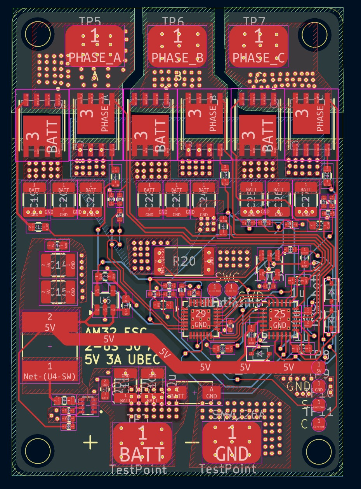
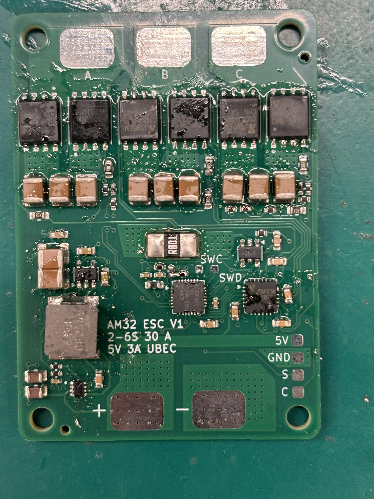

Projects
An issue I had with some drone prototypes was having electronic speed controllers that were cost-effective while also meeting sufficient requirements. It was difficult to find a BLDC ESC that would meet current and especially voltage requirements, as many drones commonly use 6 cell Lipo batteries, while most cheaper ESCs only supported up to 4 cell. So, I set out to make an affordable and well-performing ESC that would meet these specifications I had in mind. This is an 2-6 cell electronic speed controller for a BLDC motor, designed to be able to take an DC voltage input, and output alternating current in the form of three seperate phases. This is timed to drive the inner rotor via a magnetic field when current is applied to different phases, and is controlled via a microcontroller and gate driver. This ESC specifically uses an ARM Cortex-M4 MCU by Artery Technology. The application for this ESC is high-current draw drone brushless motors from 7.4 to 25.2 volts, or two-six LiPo/Li-ion cells. I used high current power and ground planes in order to supports up to 30 amps of current draw, and external heat sinks can be used in order to manage the thermals of the ESC.
Tools & Skills: PCB Design, BLDC ESC, Motor Control, Power Electronics, KiCAD, STM32 Microcontroller

